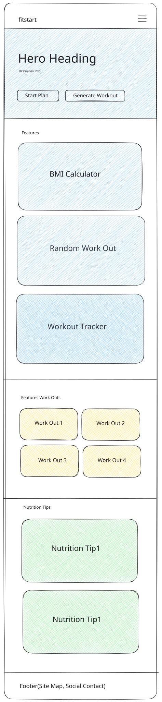
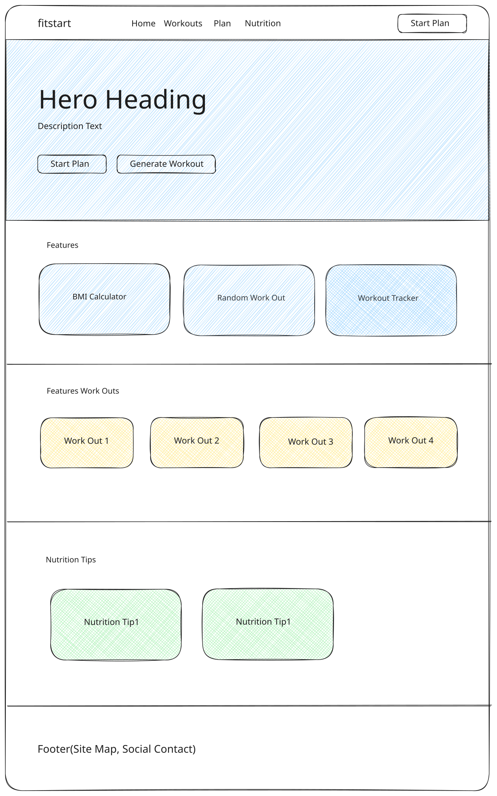

Site Name
FitStart Planner
Why this name: "FitStart Planner" clearly communicates the site's dual purpose: helping beginners start their fitness journey with simple planning tools. The name is memorable, action-oriented, and welcoming to newcomers who might feel intimidated by more advanced fitness resources. It emphasizes both fitness and organization, which are the core offerings of the site.
Optional domain ideas: fitstart-planner.com, getfitstart.org, or beginnerfitnessplanner.com
Site Purpose
FitStart Planner serves as a beginner-friendly fitness hub that provides simple, actionable guidance for people just starting their health journey. The site will offer:
- Beginner Workouts: Easy-to-follow exercise routines designed specifically for beginners, requiring minimal or no equipment
- Nutrition Tips: Practical, sustainable healthy eating advice without overwhelming diet rules
- Weekly Planning: A simple interface to help users organize their fitness activities throughout the week
- Interactive Tools: JavaScript-powered features including a BMI calculator, random workout generator, and workout tracker with localStorage persistence
- Educational Content: Clear explanations of fitness fundamentals to build user confidence
The site aims to make fitness accessible and less overwhelming by providing clear guidance, encouragement, and practical tools users can implement immediately.
Scenarios
These questions represent typical inquiries from the target audience—beginners seeking to start or improve their fitness journey:
"I've never worked out before and don't know where to start. What are some simple exercises I can do at home without any equipment?"
"How can I plan my workouts for the week so I stay consistent and don't get overwhelmed?"
"What's my BMI and what does it mean? What should I be eating to support my new workout routine?"
Color Schema
The website uses a bold, high-contrast palette that energizes and commands attention. These colors are applied throughout this planning document.
Primary: Vibrant Yellow
#FFE608
Primary accents, call-to-action buttons, highlights, key interactive elements, energy and motivation cues
Accent: Pure Black
#000000
Headings, navigation, body text, backgrounds for contrast, bold statements
Background: White
#FFFFFF
Page background, card backgrounds, content areas for maximum contrast
Supporting: Light Gray
#F5F5F5
Section backgrounds, borders, subtle separators, secondary backgrounds
Typography
Two complementary fonts create a modern, readable hierarchy (within the 1–3 font requirement):
Syne
Usage: All headings (H1, H2, H3), navigation menu, button labels, section titles. Syne is a contemporary geometric sans-serif with a strong, athletic personality perfect for fitness branding.
Build a Weekly Plan You Can Stick To
AaBbCc 123 !@#
Inter
Usage: Body text, paragraphs, lists, form labels, UI elements for clean readability. Inter is optimized for screen reading and pairs beautifully with Syne's bold character.
This site helps beginners stay consistent with short workouts, simple nutrition tips, and tools like a BMI calculator and workout tracker.
AaBbCc 123 !@# — The quick brown fox jumps over the lazy dog.
Wireframes
Layout diagrams for the Home page in mobile and desktop (wider) views. These wireframes show content structure and relationships.
Mobile View

Desktop View (Wider Viewport)
